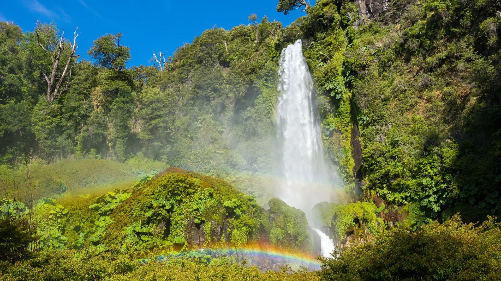
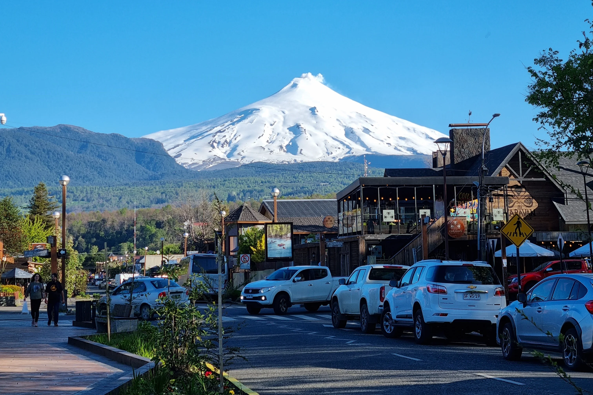
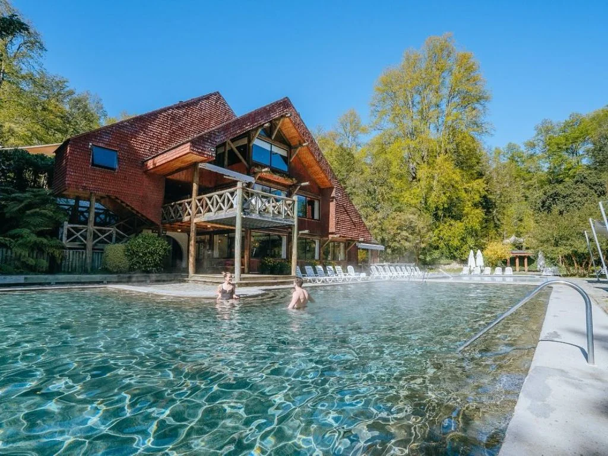
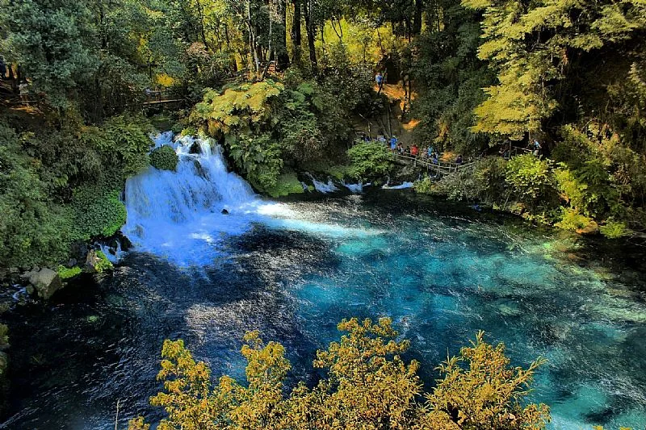
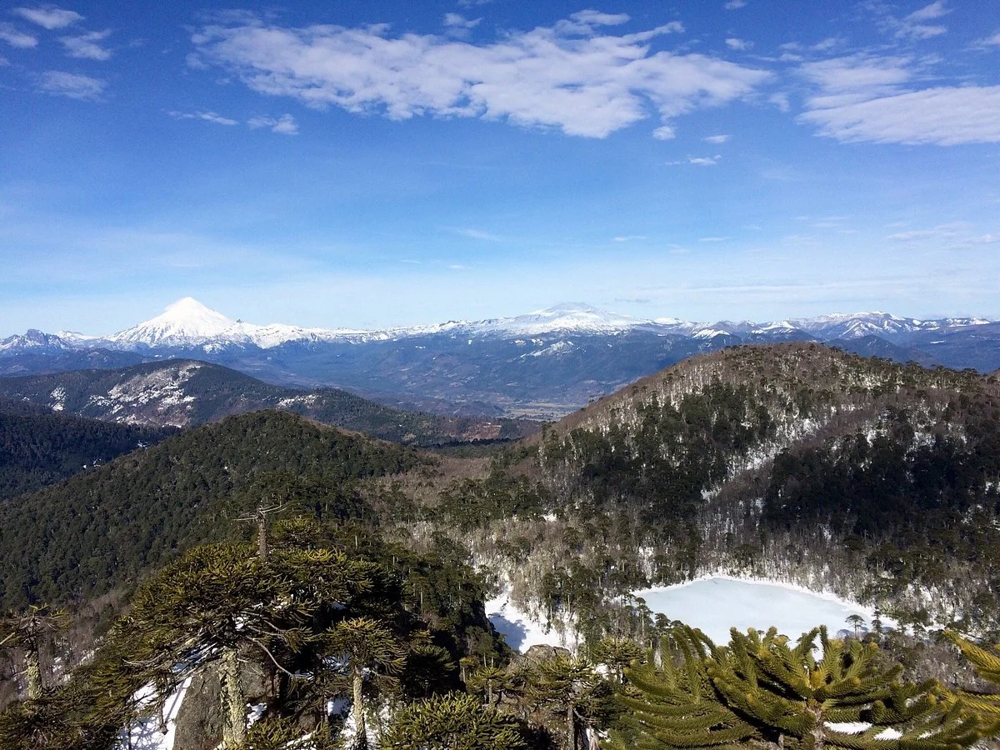
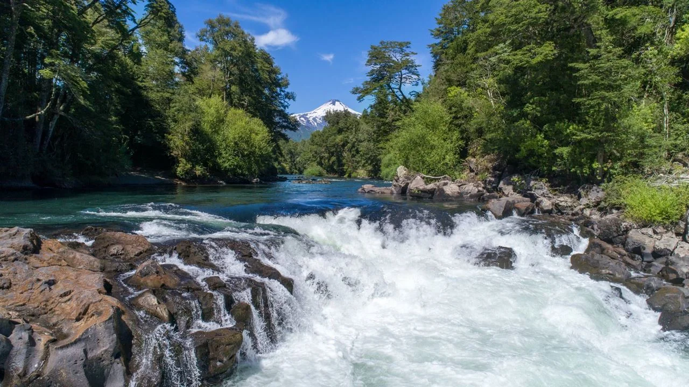
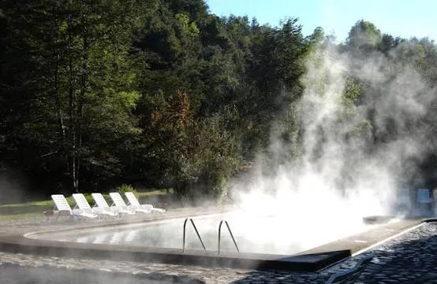

Salto La China
Camina hasta esta cascada escondida entre bosque nativo, ideal para una caminata corta.

Explora termas, cascadas y bosques nativos en la capital turística del sur de Chile.
No se encontraron rutas que coincidan con los filtros seleccionados.

Camina hasta esta cascada escondida entre bosque nativo, ideal para una caminata corta.

Relájate en aguas termales naturales rodeadas de bosque nativo.

Descubre estas pozas de agua cristalina escondidas entre bosque y roca volcánica.

Recorre senderos entre araucarias milenarias en uno de los bosques nativos mejor conservados de la zona.

Disfruta de rafting y paisajes de aguas turquesas en este cañón rodeado de naturaleza.

Relájate en piscinas de aguas termales naturales rodeadas de bosque nativo, a pocos minutos de Pucón. Una experiencia ideal para descansar después de un día de aventura.